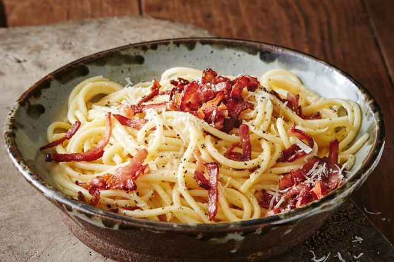

What is better than food with interesting history?
Forks and Folklore isn’t just a recipe website—it’s your culinary adventure with a side of storytelling!
Get ready to dive into dishes that come with their own soap opera, because here, we don’t just feed you; we regale you with the juicy, sometimes ridiculous, tales behind every recipe. Who knew your dinner could come with a plot twist?
Recipes
-

Australian smoky bacon carbonara
-
 This is satay chicken skewers
This is satay chicken skewers
-
Flavor rich Ethiopian cuisine